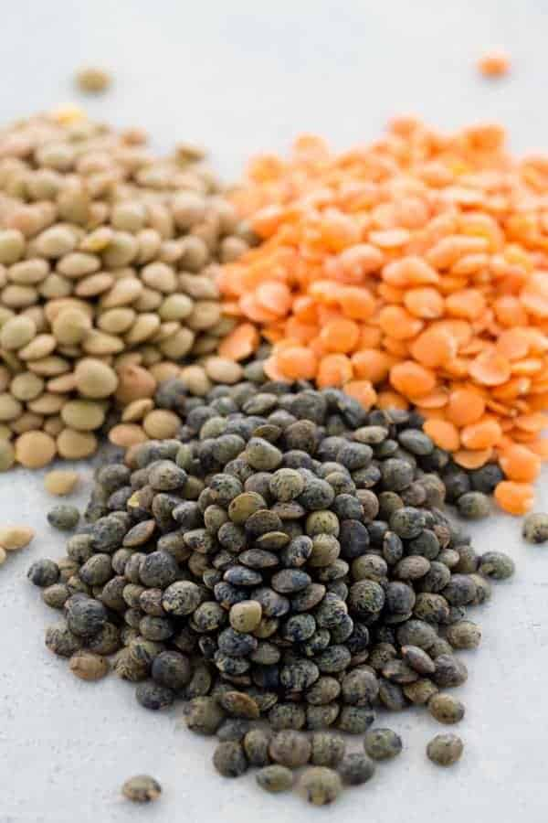

What is Dal?
Derived from the Sanskrit word that means “to split”, dal is a collective
term for pulses—lentils, peas, and beans.
While sometimes used in other dishes, these pulses are usually served slow-simmered into a soft,
porridge-like dish that's also called dal.
It's one of the most widespread and traditional daily foods across India, Pakistan, Nepal, Sri
Lanka, and Bangladesh, and like any dish that millions of people cook daily, dal is infinitely
adaptable.
Skill 1: Dal Fry
Skill 2: Sambar
